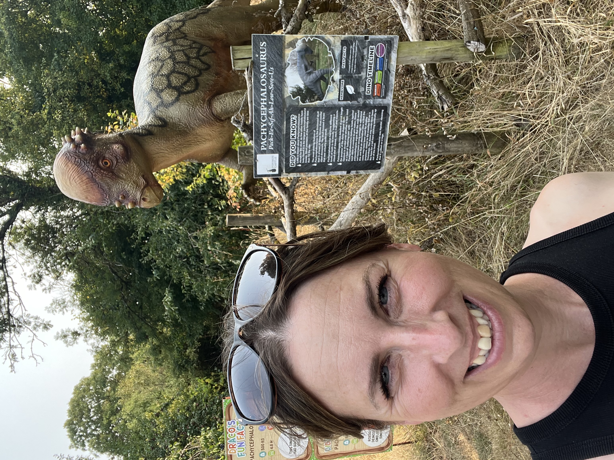

I’m Pip, an aspiring software developer from the UK.
I’m now 40 and, over the last five years while raising my daughter, I’ve been studying part-time for a BSc (Hons) in Computing & IT with The Open University. I have one year and two modules remaining, and I’m looking forward to completing my degree.
I built this website to practise my front-end development skills and to create a place where I can showcase the projects I work on as I continue learning. It’s a record of my progress, from my earliest projects through to more advanced work.
I’m particularly interested in web development and enjoy solving problems by building practical applications. As I learn new technologies, I’ll continue to improve this site and add new projects along the way.